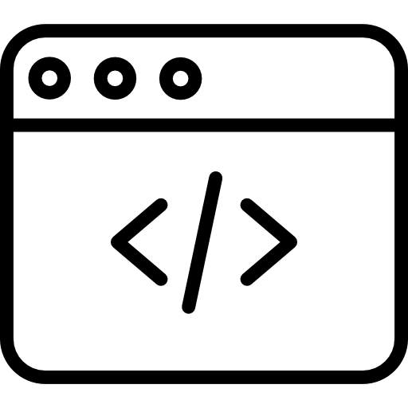

Ingeniería de pila completa
Cuento con más de 3 años de experiencia profesional en el área de ingeniería de software y desarrollo web. Más recientemente, he estado trabajando con Angular, ExpressJS, MongoDB y ReactJS, pero nunca olvidaré a mi primer amor, Python3, el backend y yo, un solo corazón.
Web Full-stack Especializado
Tengo 1 año de experiencia especializándome y trabajando con tecnologías de desarrollo web tanto para páginas web como para aplicaciones web manejando buenas prácticas y los patrones de desarrollo más actuales utilizando los Stacks más usados para desarrollar aplicaciones web premium (MERN y MEAN).